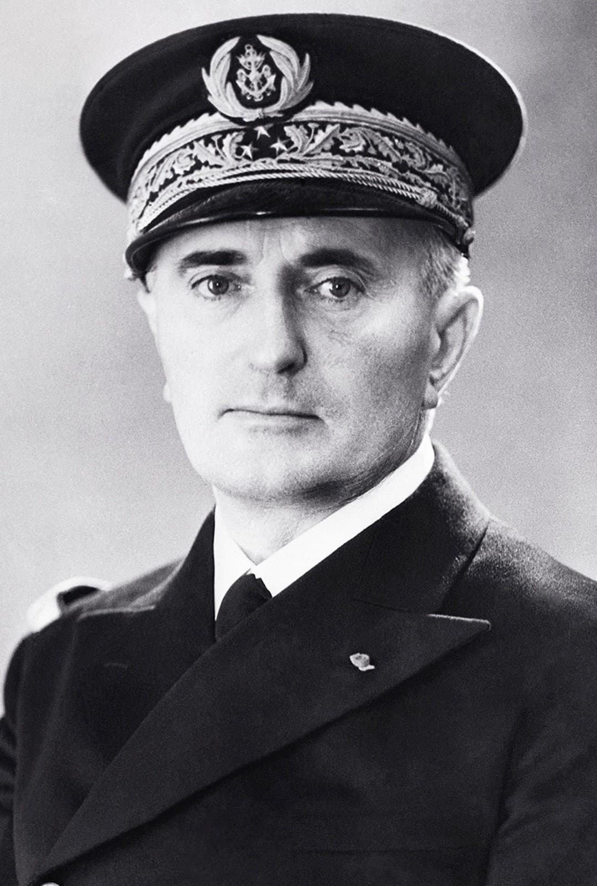

François Darlan est l’une des figures les plus controversées de la France de Vichy. Amiral, ancien chef d’état-major de la Marine, il devient l’un des principaux dirigeants du régime de Vichy avant de prendre le pouvoir en Afrique du Nord après le débarquement allié de novembre 1942. Il est assassiné à Alger le 24 décembre 1942 par le jeune résistant Fernand Bonnier de La Chapelle.
Nom : François Darlan
Dates : 7 août 1881 – 24 décembre 1942
Nationalité : Française
Fonction : Amiral • Chef de la Marine • Dirigeant de Vichy • Haut-commissaire en Afrique du Nord
Issu de la Marine nationale, Darlan gravit tous les échelons jusqu’à devenir amiral et chef d’état-major général de la Marine. Il joue un rôle important dans la modernisation de la flotte française et dans la préparation navale avant la Seconde Guerre mondiale.
Après la défaite de 1940, Darlan rejoint le maréchal Pétain et devient l’un des principaux dirigeants du régime de Vichy. Il occupe plusieurs postes clés : vice-président du Conseil, ministre de la Défense, et exerce une influence majeure sur la politique militaire et navale. Il participe à la collaboration avec l’Allemagne nazie, tout en cherchant à préserver une certaine autonomie de la flotte française.
En novembre 1942, lors du débarquement allié en Afrique du Nord (opération Torch), Darlan se trouve à Alger. Les Alliés décident de le reconnaître comme autorité politique provisoire en Afrique du Nord, malgré son passé vichyste, afin de stabiliser la situation. Cette décision provoque une profonde colère chez les résistants et les partisans de la France Libre, qui refusent de voir un ancien collaborateur rester au pouvoir.
Le 24 décembre 1942, François Darlan est abattu à Alger par Fernand Bonnier de La Chapelle, jeune résistant de 20 ans. L’attentat met fin brutalement à son rôle politique en Afrique du Nord et ouvre une période de recomposition du pouvoir, qui permettra progressivement un rapprochement avec la France Libre de Charles de Gaulle.
Darlan reste une figure très controversée de l’histoire française : collaborateur du régime de Vichy, mais aussi acteur de la transition politique en Afrique du Nord après Torch. Son parcours illustre les ambiguïtés, les calculs politiques et les compromis de certains dirigeants français durant la guerre.